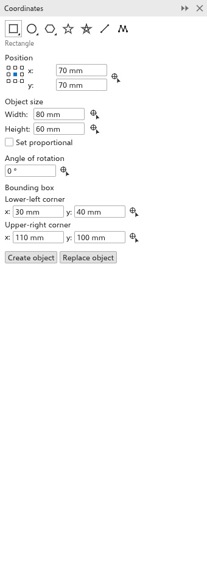

Bu sayfa henüz çevrilmedi ve İngilizce gösteriliyor.
Moving, scaling, rotating and skewing
You can transform objects by dragging them with the Pick tool (see Selecting objects), by typing values on the property bar, with the Free Transform tool, or precisely with the Transformations panel.
The Transformations panel
Open the panel with Object > Transformations, or with Alt+F7 (Position), Alt+F8 (Rotate), Alt+F9 (Scale and Mirror) and Alt+F10 (Size). The buttons at the top choose one of five pages.

Every page ends with the reference point, a 3 by 3 grid that chooses the point of the selection that is placed, turned about or kept still (the center at first), Copies and Apply. Distances are in the drawing units, angles in degrees (counterclockwise), scales in percent.
To transform the selection:
- Choose a page and type the values.
- Choose the reference point.
- Set Copies: 0 changes the selection itself; a number above 0 leaves the selection as it is and adds that many copies, each transformed once more than the one before. The copies are one undo step, and the last copy becomes the selection, so another Apply goes on from there.
- Click Apply.
Position
X and Y move the selection. With Relative position on (at first), they are a distance to move by; off, they are where the reference point goes, counted from the ruler origin. With Relative position on, the grid picks a direction: a side or a corner sets the distance to the selection's size, so each copy lands right next to the last one.
Rotate
Type the angle, and the Center to turn about. With Relative center on (at first), the center is counted from the reference point; off, from the ruler origin.
Scale and Mirror
X and Y scale in percent (100% at first). Mirror horizontally and Mirror vertically flip the selection. Proportional keeps both scales the same.
Size
W and H set the width and height of the selection. Proportional keeps the proportions.
Skew
X and Y slant the selection by angles. With Use anchor point on, the reference point stays still; off, the center does.
The Free Transform tool
The Free Transform tool, in the Pick flyout, transforms the selection about the point where you press. Choose a mode on the property bar:
- Free rotation (at first): turns the selection around the press point.
- Free angle reflection: mirrors the selection across the line from the press point to the pointer; moving the pointer turns that line.
- Free scale: scales about the press point.
- Free skew: horizontal movement skews horizontally, vertical movement vertically.
Hold Alt to scale, Ctrl to skew or Shift to reflect for one drag, whatever the mode. With Apply to duplicate on, the press makes a copy and the drag transforms the copy, leaving the original as it was. The property bar also has the position, size, scale, angle and mirror fields. One drag is one step: Ctrl+Z puts the selection back as it was before the drag (and takes the copy away).
Undoing transformations
Object > Clear Transformations takes the selected objects back to how they were before they were scaled, rotated or skewed.
The Coordinates panel
The Coordinates panel draws an object from typed coordinates, or reshapes the selected one, with a dashed preview on the drawing. Open it from Window > Panels.

- Choose the kind of object with the buttons at the top: rectangle or square, ellipse or circle, polygon or regular polygon, star, complex star, 2-point line or multipoint curve.
- Type its values:
- rectangles and ellipses: the position of the origin point (chosen in a 3 by 3 grid), the width and height, the angle of rotation, and the corners of the bounding box while the angle is 0;
- squares and circles: the position, the side or diameter and the angle;
- polygons and stars: the number of points or sides, the sharpness, the angle and the circle the points lie on;
- regular polygons: the number of sides, the length of a side, the angle and the center;
- 2-point lines: the start point and end point, or the length and angle;
- multipoint curves: the list of points, with buttons to add and delete points and to close the curve.
- Instead of typing, click a button with a pointer and target, then click or drag on the drawing to set that value. A right click cancels.
- Click Create object to add it, or Replace object to reshape the selected rectangle, ellipse, polygon or curve while keeping its fill, outline, name and place.
Positions are counted from the ruler origin, in the drawing units.